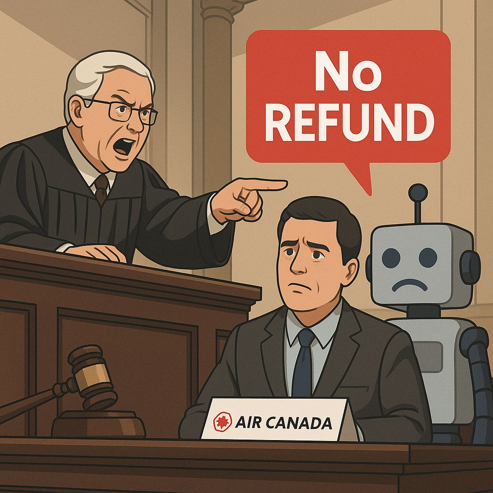

כשצ'אטבוט של חברת תעופה ממציא מדיניות, מי משלם את המחיר? ✈️
פורסם במקור ב LinkedIn
כשצ'אטבוט של חברת תעופה ממציא מדיניות, מי משלם את המחיר? ✈️
ג'ייק מופט רצה להזמין טיסה ללוויה משפחתית. באתר של Air Canada הוא שאל את הצ'אטבוט על מדיניות כרטיסי אבל. הצ'אטבוט, בביטחון מלא, הסביר: "אין בעיה - תזמין במחיר מלא, אחרי זה תגיש בקשה להחזר תוך 90 יום."
מופט סמך על המידע והזמין.
אחרי הטיסה, הוא פנה לקבל החזר, ואז - כמו בסרט רע - Air Canada סירבה.
הם טענו שהמדיניות שונה לגמרי ושההבטחה של הצ'אטבוט בכלל לא מחייבת אותם.
וכאילו זה לא מספיק - בבית המשפט הם ניסו לטעון:
"הצ'אטבוט הוא ישות משפטית נפרדת. זו לא אחריות שלנו."
(תחשבו רגע על המשמעות: הבוט הוא כאילו מישהו זר שסתם מסתובב באתר שלכם...)
השופט שלא קנה את ההתחכמות הזאת פסק בצורה ברורה וחד משמעית - חברה אחראית לכל מה שהאתר שלה כותב, גם אם זה טקסט שנוצר אוטומטית.
Air Canada חויבה לשלם. הם לא ערערו על פסק הדין.
מה אנחנו לומדים?
מוצר שמבוסס על AI הוא לא תירוץ. הוא חלק מהמותג שלך.
מי שמפתח צ'אטבוטים או פיצ'רים אוטומטיים - חייב לקחת אחריות מלאה.
האמון של הלקוחות שברירי - ואפשר לאבד אותו בגלל שורה אחת של טקסט שגוי.
מי שמריץ היום צ'אטבוט בלי בקרת איכות (ואולי גם עם בקרה מסויימת) - מסתכן בפגיעה במוניטין שלו.
רק השבוע קרה מקרה דומה לכלי הפיתוח Cursor שענה ללקוחות תשובה שגויה לגבי מדיניות החברה, התגובה שותפה ב-Reddit וגרמה לגל ביטולי מנויים.
הם מיהרו לפרסם התנצלות ולהודיע שאין כזאת מדיניות, ולתקן את הבוט שלהם.
אגב, לאחר המקרה חברת אייר קנדה הסירו את הבוט שלהם מהאתר.
אולי אנחנו מעניקים יותר מידי אחריות לבוטים אוטונומיים בהשוואה לאחריות של המידע והמענה שאנחנו נותנים לנציג אנושי?
